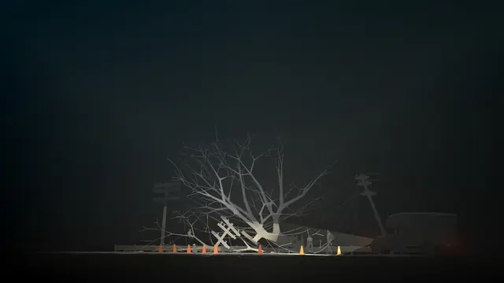
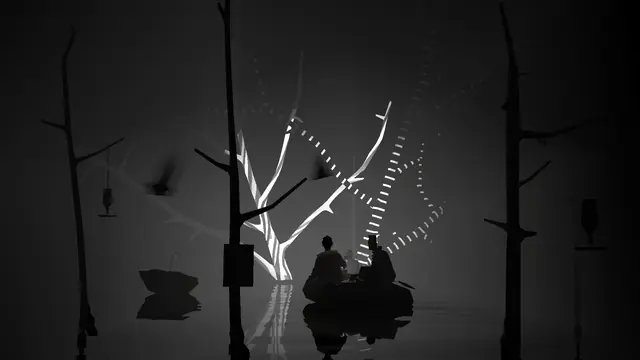
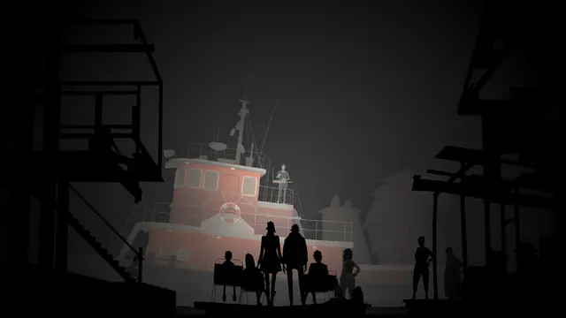
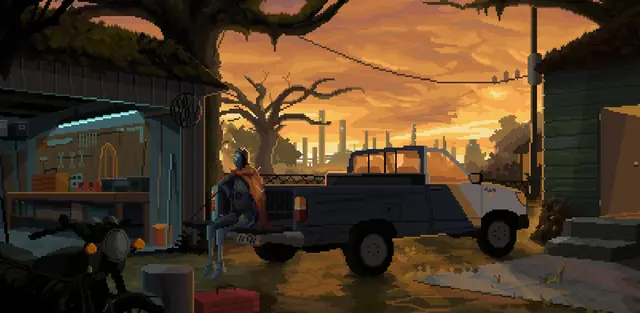
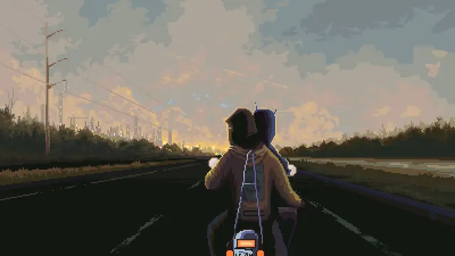
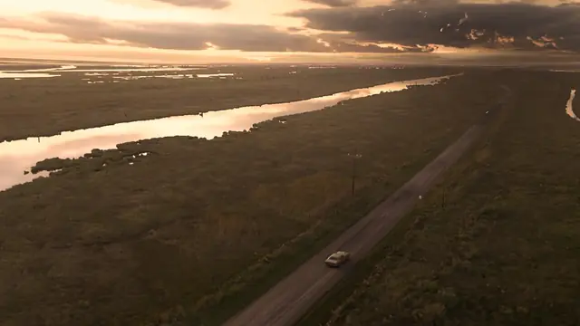
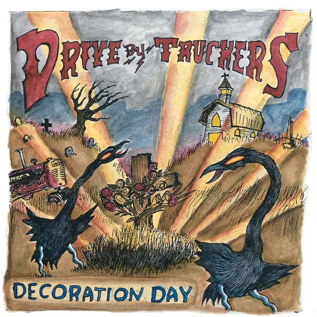
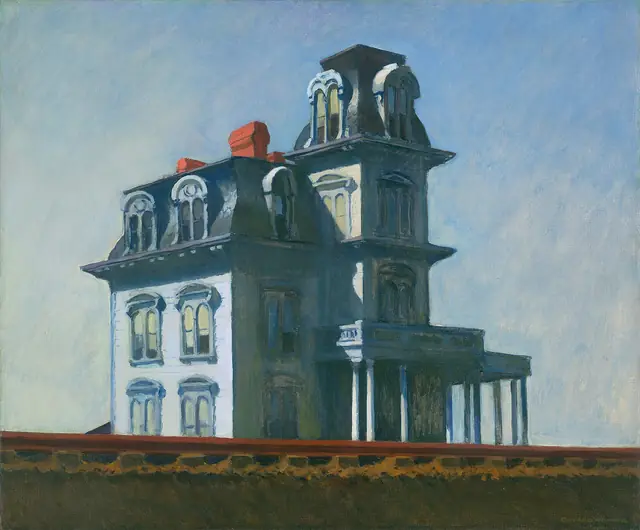
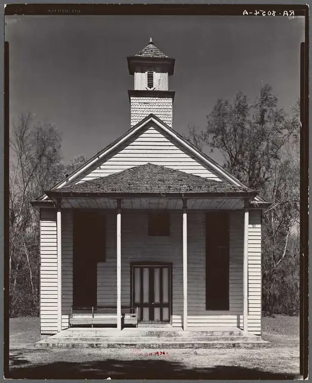
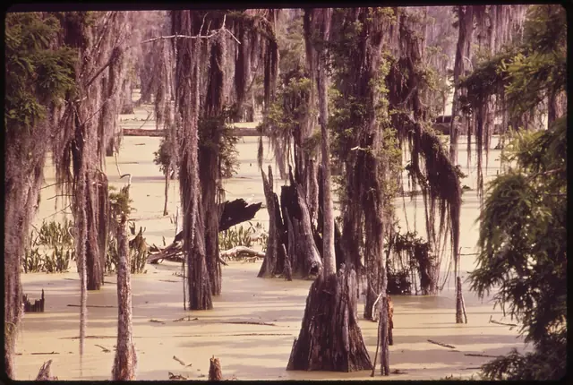

The feel
Southern Gothic uses horror and the grotesque to expose the problems of Southern society through complex characters.1 Its horror comes not only from fantastic events but from the harsh realities of life in the region, which make the familiar seem unsettling, and from the haunting legacy of slavery and the Civil War.1 Tennessee Williams named what its writers had in common: "a sense, an intuition, of an underlying dreadfulness in modern experience".2
Kentucky Route Zero is filled with places in between: petrol stations, boats, abandoned mines.3 Its people accept the magical and the bizarre along with the real, a tenet Jake Elliott took from magical realist fiction.4 Yuts built NORCO so that "the landscape takes primacy", and meant it as a love letter to Louisiana rather than a dystopia.5
- humid
- hushed
- decaying
- devout
- lonesome
- late-evening
Where it comes from
William Faulkner introduced Southern Gothic in the 1920s, and it peaked from the 1940s to the 1960s with writers including Flannery O'Connor, Carson McCullers, Harper Lee and Truman Capote.1 Defending McCullers's Reflections in a Golden Eye (1941) against charges of grotesquerie, Tennessee Williams described the Southern "Gothic school" of writers.2 On screen, The Night of the Hunter (1955) is often cited as a Southern Gothic classic, though it is better called Appalachian Gothic, and the critic Nick Pinkerton finds Williams's "underlying dreadfulness" still alive in True Detective (2014).2 In games, Kentucky Route Zero, released in five acts from 2013 to 2020, drew on Southern Gothic fiction because it is set in the South,6,3 and NORCO (2022) was billed as "a Southern Gothic point-and-click narrative adventure".5
Core elements
Grotesque characters
Asked why Southern writers write about freaks, Flannery O'Connor answered "because we are still able to recognize one", and said the characters in such fiction have "an inner coherence, if not always a coherence to their social framework".7 Jake Elliott, who drew on Faulkner for Kentucky Route Zero, says Faulkner's grotesques are very complex characters, "not grotesque because they're stupid".8
Decaying houses and towns
Where classic Gothic has castles, Southern Gothic has decaying plantation homes, and a whole town can carry the same sense of decay.1 William Christenberry photographed central Alabama every year for four decades, recording houses falling in on themselves and kudzu claiming the space, out of "a deep affection for where I'm from".9
History still present
It is often said of the South that its history is still present, or as Faulkner put it, "The past is never dead. It's not even past."2 Sally Mann's Deep South photographs set out to show how the land held the scars of the past,10 and Kentucky Route Zero sets itself in a "non-time" that runs the Depression, the coal wars and the 1970s oil crisis together with the present.3
Religion and folk belief
For O'Connor the South is "hardly Christ-centered" but "most certainly Christ-haunted", and in its literature ghosts "cast strange shadows".7 Southern Gothic also draws on voodoo and other myths from African American culture to create a sense of unfamiliarity and horror.1 Sally Mann photographed rural churches, most of them abandoned, and a number of them sit at one with nature, surrounded by bushes and trees.10
Flat landscapes and swamps
Kentucky's geography inspired much of the look of Kentucky Route Zero's mysterious highway, and on the flat roads near Jake Elliott's home "it feels like there's way too much sky".4 South Louisiana has no topography to speak of, so the only vantage is a levee, a bridge or a roof.5 Sally Mann titled her swamp pictures Blackwater, after the slow channels that turn dark as vegetation decays.10
Industry beside homes
Yuts grew up a few blocks from the Shell refinery in Norco, which he calls a "giant, fire-breathing dragon sitting in everyone's backyard" that nobody talks about.5 True Detective's Louisiana has "a strong presence of the petrochemical infrastructure and the pollution of the physical landscape",11 and Kentucky Route Zero remembers mining companies using violence to suppress unions.3
How to do it
Photograph and paint a real place
Yuts based NORCO's visuals on years of photographing and painting suburban New Orleans, and drew characters from local archetypes such as the "heybra" townie and the old-style "yat".12 Christenberry photographed the same buildings over many years, then laid the prints out in grids to show what time and nature did to them.9
Stage scenes as theatre sets
Treat each environment as a little theatre set: block the characters like actors, turn them towards the camera as if speaking to an audience, and reuse one space for several scenes, as Kentucky Route Zero does.3 Its art direction draws heavily on theatrical set design.6
Build sets from photographs
For True Detective's titles, Elastic modelled truck stops and oil refineries as low-poly geometry, projected landscape photographs onto it and painted in details, then flew very slow virtual cameras through the scenes.11 Portraits serve as windows onto partial landscapes, a double exposure that shows characters who are marginalised or internally divided.11
Slow down the motion
Tamas Kemenczy's GDC talk on Kentucky Route Zero's environments and cinematography covers its use of theatrical stagecraft and slow cinema.13 In True Detective's titles, some footage runs at 10 or 20% of its original speed, which gave a surreal, floaty mood.11
Add lens flaws and light leaks
Sally Mann fitted a faulty antique lens that threw flares of light, and used high-contrast film for what she called the "radical light of the American South".10 She welcomed light leaks, fogging and flaws in the process,10 and Clarence John Laughlin used multiple exposures to show the devastation wrought by time and neglect.14
Keep the palette muted
Keep the palette dull and muted, as Kentucky Route Zero does.4 For True Detective's titles, Elastic ran light and dark dirt and marks through the pictures, with a gentle undulation between pale yellows, greens, dark blues and light flares.11
Format dialogue as stage directions
Kentucky Route Zero's script is meant to read like a stage play, with lines written as stage directions and italic, stream-of-consciousness passages styled after Tennessee Williams's play scripts.3 Some choices set a character's inner life rather than their actions, the way an actor builds a backstory.6
Cheat sheet
Do
- Let characters accept the magical and the bizarre along with the real, as magical realist fiction does.4
- Give grotesque characters an inner coherence, even when they don't fit their social framework.7
- Build the look from your own photographs and paintings of a real place.12
- Celebrate the place in all its complexity, contradiction and beauty, as NORCO set out to do.12
- Keep the flaws. Mann saw poetic potential in technical imperfections.10
Avoid
- Plantation nostalgia. Southern Gothic grew out of writers who questioned the romanticised view of plantation life and slavery in mainstream Southern stories.1
- Grotesques played as fools. Faulkner's characters, Jake Elliott says, are complex and "not grotesque because they're stupid".8
- Violence for its own sake. For O'Connor, "violence is never an end in itself" in serious writing.7
- Telling the player what to feel. Yuts made NORCO as a mirror, "not intended to tell anyone how to feel".5
- Scenery built only to be run through, which Tamas Kemenczy found "boring".3
Tools and tutorials
- Twine
Free tool for branching text stories. Kentucky Route Zero's small text adventures on its map were inspired by Twine games.6
- ink
Inkle's scripting language for branching dialogue, with a Unity integration.
- Yarn Spinner
The dialogue system NORCO used.12
- Godot: environment and post-processing
Depth fog, sky colour and tonemapping: the settings to try for layered dusk scenes.
- Aseprite
The pixel art editor NORCO was drawn in.12
Palette
Night road and teal from Kentucky Route Zero's Equus Oils, sunset, mauve and porch light from NORCO, moonlit blue from Wes Freed's Dirty South cover, and the pale green sky behind American Gothic. On this page the sky darkens as you scroll down.
Feel the vibe
In motion
Listen
Synth country with the lights turned low.
YouTubeHazy, humid electronics: the modern counterpart to the old songs here.
YouTubeTrue Detective's production had already chosen it as the title music when the title designers started work.11
YouTubeListen to how calmly a family talks about a death over dinner.
YouTubeStanley's solo performance of it won the Grammy for Best Male Country Vocal Performance. He grew up singing a cappella in a Baptist church that allowed no instruments.15
YouTube
More references










Games
- Gabriel Knight: Sins of the Fathers
Study its painted New Orleans and how it folds voodoo into a murder mystery.
- Kentucky Route Zero
Study its environments staged as theatre sets and the mysterious highway at its centre.3,4
- Resident Evil 7: Biohazard
Study how one rotting farmhouse and its family carry a whole horror game.
- Hunt: Showdown
Study how its swamps hold fog and lamplight.
- NORCO
Pixel art of sinking suburbs and industrial swamps, by a developer who grew up in Norco.5
- Alone in the Dark
Study how it stages a decaying Southern mansion.
Film, art and more
- American Gothic
Study the flat, frontal pose and the pointed window behind the couple.
- Let Us Now Praise Famous Men
Study Walker Evans's plain, frontal photographs of tenant farmers and their houses.
- Wise Blood
Flannery O'Connor's novel, filmed by John Huston, about a veteran who preaches atheism from street corners and founds a Holy Church of Truth Without Christ.2
- The Night of the Hunter
Often cited as a Southern Gothic classic, though more accurately Appalachian Gothic. Study how it films the Ohio river.2
- Swamp Thing
Study how the comic draws the swamp as a living thing.
- True Detective, season 1
1990s Louisiana among petrochemical plants and polluted land, with titles that build each lead character out of the place.11
- Drive-By Truckers album covers
Wes Freed painted the covers for nearly every release from 2001 on, and Patterson Hood calls his art as synonymous with the band as its songs.16
Sources
- 1Southern Gothic literature
- 2Southern Gothic
- 3A story told in five acts: The making of Kentucky Route Zero
- 4Welcome to The Zero: the making of Kentucky Route Zero's open road
- 5The Dragons of Norco
- 6From Kickstarter to burgeoning cult hit, we explore the origins of Kentucky Route Zero
- 7Teaching Flannery O'Connor: An Online Professional Development Seminar
- 8Kentucky Route Zero puts the Southern Gothic world of Faulkner and O’Connor on centerstage
- 9See the South Change Before Your Eyes in the Photographs of William Christenberry
- 10Sally Mann: A Thousand Crossings
- 11True Detective (2014)
- 12NORCO and capturing the spirit of Louisiana through sci-fi storytelling
- 13Scenography of Kentucky Route Zero
- 14Clarence John Laughlin
- 15Remembering Bluegrass And Banjo Legend Ralph Stanley
- 16Wes Freed: April 25th, 1964 - September 4th, 2022